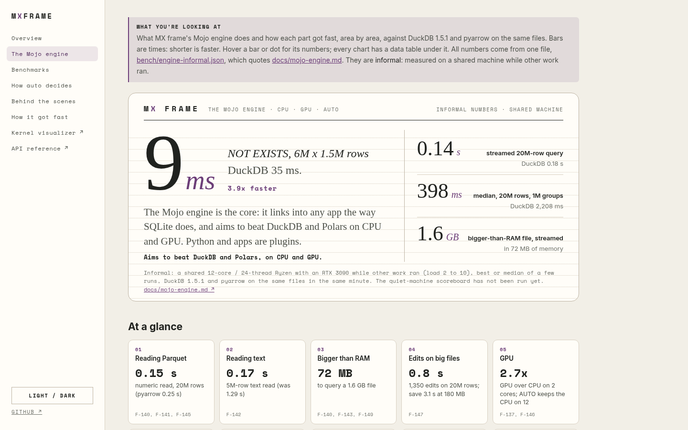
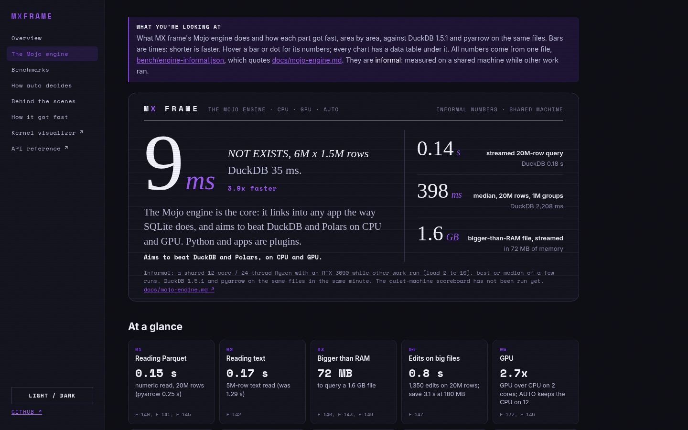

Decided 2026-10-19The owner picked
B, editorial paper: light ruled paper, one huge serif number (NOT EXISTS, 9 ms against DuckDB's 35), the other headline numbers in a ruled ledger column. It is now the only look, in the README and on
engine.html. The rejected option, A (a dark Terminal Ledger card with a violet glow and four equal headline tiles), was removed; it is in commit
a0151ff if it is ever wanted again.
// design record · the Mojo engine
B: editorial paper, one big serif number
Every image is drawn by scripts/make_engine_art.py from docs/bench/engine-informal.json, which quotes docs/mojo-engine.md. Images are scaled down here; GitHub shows the hero about 830 px wide.
README hero, on GitHub light
README hero, on GitHub dark
Charts (the README uses "leads" and "still behind")
The page: docs/site/engine.html
1440 × 900 in light and dark (the hero follows the theme toggle), and a phone at 390 wide. The live page loads its JSON, so open it through a server (python -m http.server -d docs) or on GitHub Pages.
abhisheksreesaila.github.io/mxframe/engine.html · light

abhisheksreesaila.github.io/mxframe/engine.html · dark
